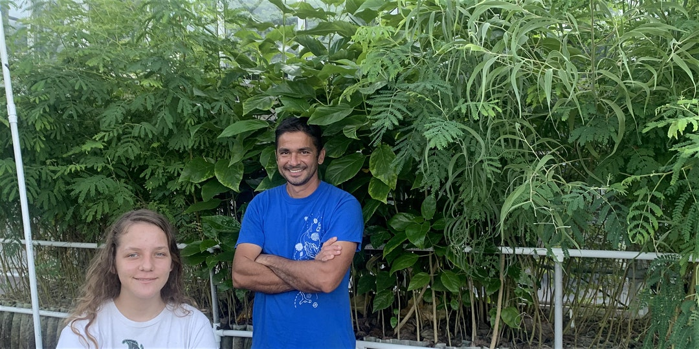

Over the years we have worked on reef fishes, whales, bacteria, fungi, heatwaves, cardiovascular diseases, Bitcoin, rainbows, and a few other things. What they all have in common? Numbers, lots of them.
My lab specializes on any problem that can be tackled with big data analytics.
Another major focus of our work is forest restoration via the Carbon Neutrality Challenge, which is a project spearheaded by my daughter Asryelle Mora, in which any individual can offset their carbon emissions by planting trees.

<div class="header">
<div class="header_resize">
<div class="logo">
<br>
<h1>Mora<span>Lab</span></h1>
<font size="1.9" color="white"><i>making the world a better place one paper at a time</i></font>
<br>
<br>
</div>
<div class="menu_nav">
<ul>
<li><a href="index.html"><span>Home</span></a>
</li>
<li><a href="Team.html"><span>Team</span></a>
</li>
<li><a href="Publications.html"><span>Publications</span></a>
</li>
<li><a href="Courses.html"><span>Courses</span></a>
</li>
<li><a href="PressRoom.html"><span>Press</span></a>
</li>
<li><a href="OnTheNews.html"><span>In the news</span></a>
</li>
<li><a href="Resources.html"><span>Resources</span></a>
</li>
<li><a href="Carbon Neutrality Project"><span>CO2 Neutrality</span></a>
</li>
</ul>
</div>
</div>
</div>
</div>
<div class="content" style="margin-left: 0px; margin-top: -6px;">
<div class="content_resize">
<tr>
<td colspan="2" align="center">
<br><br>
<strong><span style="font-size:20px; color: #006;">Tree carbon storage calculator<br></span></strong>
by Camilo Mora, Ph.D.
<br><br>
</td>
</tr>
<tr>
<td width="700" colspan="2" valign="top">
<p style="text-align:center;">
<img src="images/Carbon sequestration.png" width="900">
<br>
</p>
</td>
</tr>
<tr>
<td width="700" colspan="2" valign="top">
<p line-height: 1.2; style="font-size:18px">
<strong>Summary: </strong> Climate change is truly a terrifying thing. By increasing the amount of CO2 in the atmosphere, we are increasing the temperature of the planet, which in turn is increasing drought, heatwaves and wildfires in some areas, and extreme precipitation and floods in others. Add sea-level rise to the mixture and you get the picture. All these climatic hazards have the capacity to make humanity sicker, hungrier, thirsty, homeless, poor, and unsafe.
<br><br>Remarkably, all these disasters can be traced back to a simple unbalance of the Earth's atmospheric CO2 concentration: we produce more CO2 than it can be removed.
From this perspective, averting the threat of climate change will require some degree of luck discovering new types of "green"/zero-emissions energy, or a considerable improvement of existing methods that capture carbon emissions; and trees, may be just what we need. Trough photosynthesis, trees break some of the “nasty” CO2 we produce into carbon, which they store, and oxygen, which they release: a win-win.
<br><br>
This app has been developed using several published equations to estimate the amount of CO2 that can be stored as carbon in a tree.
<br><br>
<strong>Background: </strong> Firsts, we need to start by understanding "allometric" relationships. Basically, as any individual grows, parts of its body will most likely correlate with other body parts; like the length of your arms relates to the length of your legs. Thus, by knowing a single attribute of the individual, you can predict other attributes of that individual. <br><br>
In the case of trees, Chave et al (2001) collected data from 12 different studies that predicted tree above ground biomass by simply knowing the tree Diameter at Breast Height or so called "DBH". In their article, they reported 12 mathematical equations, which I display below:
<p style="text-align:center;">
<img src="images/Body mass.png" width="700" align="center"><br> Above ground tree mass predictions based on tree diameter.
<br>
</p>
Using multi-model averaging from the studies reported by Chave et al (2001), then one can predict above ground dry body mass as:
<br><br>
<p style="text-align:center;">Body Mass =0.0998 * DBH^2.5445 </p>
<br>
In turn, Niklas & Enquist (2001) found that one can use tree body mass to predict their growth rate, as:
<br> <br>
<p style="text-align:center;">Growth Rate =0.208 * Body Mass^0.763 </p>
<br>
By knowing the weight of a tree, and their growth rate, one could predict the weight of the tree at different time intervals. Just like a pediatrician is able to predict the approximate weight of a child at different ages.
Until now, all weight calculations are for the part of the tree that one sees above ground. It turns out, that Cairns et al (1997) found that below ground biomass is about 24% the weight of the tree above ground.
So we need to multiply the tree mass from Chave et al . (2001) by 1.24. That is, the weight of the tree above ground, plus the 0.24 fraction below ground.
Up to this moment, we have been able to calculate the weight of the tree (below and above ground), but not all that weight is carbon.
As one may expect, the tissue of the tree has many other chemical elements. Lucky for us, Kirby & Potvin (2007) found that 47% of the dry weight of a tree is carbon. So, we can simply multiply our estimated weight of a tree by 0.47 to know the approximated carbon in the given tree.
Ok, we now have a good approximation to the carbon stored in a tree. But carbon is different from CO2. CO2 has two molecules of oxygen, so it is heavier. The molecular weight of carbon is 12.0107, while that of oxygen is 15.999. So the molecular weight of CO2 is 44.0087 or 3.6663 times heavier that carbon alone.
So to estimate the CO2 that could be taken from the atmosphere by a tree, one needs to multiply the weight of the carbon in the tree by 3.6663.
The result is a time series projection of the CO2 likely to be removed by a tree from the atmosphere and stored in its body by simply knowing the diameter of the tree.
<br><br><br> <br><br>
Tree CO2 sequestration calculator
Tree diameter at Breast Height:
The Tree CO2 sequestration calculator was developed by Camilo Mora.